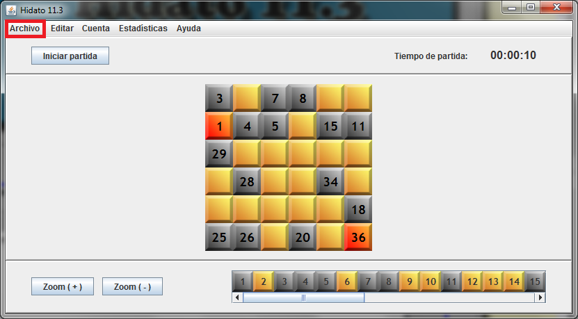

Con una partida cargada, seleccione el menú 'Archivo':

Seleccione 'Abandonar Partida':
Le aparecerá el siguiente diálogo de confirmación:
Si pulsa 'Cancelar' se abortará la operación. Si pulsa 'Sí' o 'No', se guardará la partida en función de lo que haya escogido y se cerrará: